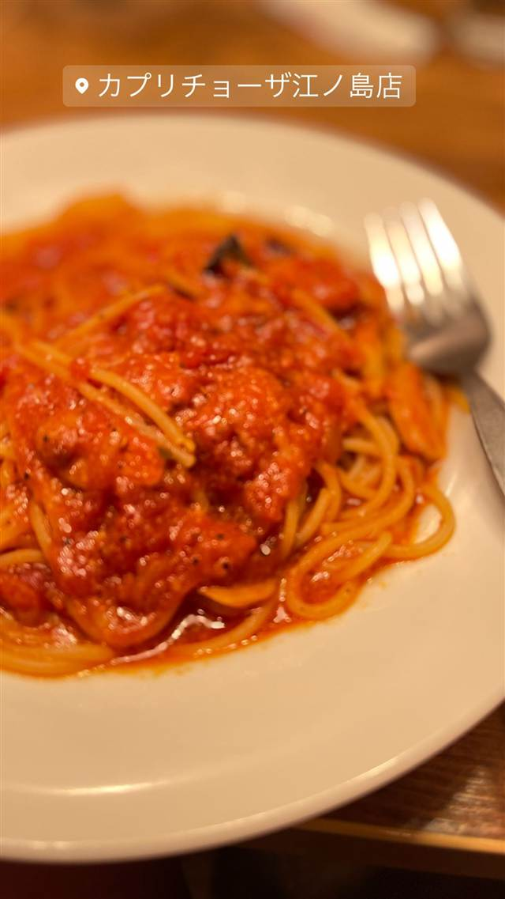

炭焼き ミンナミ食堂
明治創業の薪炭問屋を改装した古民家で味わう焼き魚定食
炭焼きミンナミ食堂
「炭焼き ミンナミ食堂」は、明治期創業の薪炭問屋だった築100年の古民家をリノベーションした定食店。江ノ電を眺めながら炭火で焼いた焼き魚定食や串焼きが楽しめる。
TRIVIA
へえ、という話
- 店名は店主の名前に由来し「みんなが集まる温かい場所」という意味が込められている
- 建物はもともと明治時代創業の薪炭問屋だった
| 看板 | 焼き魚定食、炭火焼き料理 |
|---|---|
| こだわり | 明治期創業の薪炭問屋だった築100年ほどの古民家をリノベーションした店舗で、炭火で焼き魚や串焼きなどを提供 |
| 予算 | 昼 ¥1,000～¥1,999 夜 ¥1,000～¥1,999 |
| 場所 | 湘南海岸公園駅(江ノ電)徒歩2分 神奈川県藤沢市片瀬4-16-26 |
| 注意 | 江ノ電・湘南海岸公園駅から徒歩2分。月曜、第1・3火曜定休 |
食べたもの：焼き魚定食
NEARBY
近い店・同じ系統の店
-
 パスタ 江ノ島駅(江ノ電)徒歩3分
PIZZERIA&DINING PICO 江ノ島店
しらすピッツァと自家製パンチェッタのカルボナーラが名物
昼 ¥1,000～¥1,999 夜 ¥2,000～¥2,999
パスタ 江ノ島駅(江ノ電)徒歩3分
PIZZERIA&DINING PICO 江ノ島店
しらすピッツァと自家製パンチェッタのカルボナーラが名物
昼 ¥1,000～¥1,999 夜 ¥2,000～¥2,999
-
 ピザ 小田急片瀬江ノ島駅
GARB 江ノ島
屋上テラスから富士山も望める薪窯ナポリピッツァ
昼 ¥1,000～¥1,999 夜 ¥4,000～¥4,999
ピザ 小田急片瀬江ノ島駅
GARB 江ノ島
屋上テラスから富士山も望める薪窯ナポリピッツァ
昼 ¥1,000～¥1,999 夜 ¥4,000～¥4,999
-

パスタ 小田急片瀬江ノ島駅 カプリチョーザ 江ノ島店 渋谷6坪から始まった大衆イタリアン、海辺で味わう大皿パスタ 昼 ¥1,000～¥1,999 夜 ¥1,000～¥1,999 -
 カフェ 小田急片瀬江ノ島駅
LONCAFE 湘南江の島本店
日本初のフレンチトースト専門店、パン・ペルデュの製法で焼き上げる
昼 ¥1,000～¥1,999 夜 ¥1,000～¥1,999
カフェ 小田急片瀬江ノ島駅
LONCAFE 湘南江の島本店
日本初のフレンチトースト専門店、パン・ペルデュの製法で焼き上げる
昼 ¥1,000～¥1,999 夜 ¥1,000～¥1,999
-
 カフェ 小田急片瀬江ノ島駅
SUNCAFE PARADISE（サンカフェパラダイス）
オーナー手作りのトレーラーハウスで海を感じるガパオ風ライス
昼 ¥1,000～¥1,999 夜 ¥1,000～¥1,999
カフェ 小田急片瀬江ノ島駅
SUNCAFE PARADISE（サンカフェパラダイス）
オーナー手作りのトレーラーハウスで海を感じるガパオ風ライス
昼 ¥1,000～¥1,999 夜 ¥1,000～¥1,999
-
 カフェ 小田急片瀬江ノ島駅
江の島龍神155カフェ
店名は番地由来、名物はしらすバーガーの複合カフェ
カフェ 小田急片瀬江ノ島駅
江の島龍神155カフェ
店名は番地由来、名物はしらすバーガーの複合カフェ